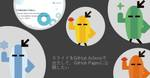

Developer Concourse Unit の活動
https://note.com/cybozu_dev_px/m/m000a1ff77a6b
サイボウズ株式会社 開発本部 People Experience チーム内で活動する，Developer Concourse Unit の活動記事をまとめるためのマガジンです．
フィード

スライドをGitHub Actionsで出力して、GitHub Pagesに公開したい
Developer Concourse Unit の活動
こんにちは。サイボウズ株式会社 開発本部 People Experienceチーム Developer Councource Unit(以降DCU)の貴島(@jnkykn)です。DCUは、エンジニアの成長や情報の流通を軸に活動をしています。さて、2025年3月9日「エンジニアがこの先生き残るためのカンファレンス2025」に、西原(@tomio2480)さんじゃなくて、貴島(@jnkykn)が登壇しました！お聞きくださった皆さま、ありがとうございました！！！お聞きくださった皆さま、ありがとうございました！フィードバックも、ありがとうございます！資料は、こちらです（初Marp資料🎉）https://t.co/E1SDDtSlvi#きのこ2025_a #きのこ2025 https://t.co/HY8L3oi1ga— きじま (@jnkykn) March 9, 2025続きをみる
6日前
情報処理学会 2024 年度 学会活動貢献賞 の受賞について 1
1
Developer Concourse Unit の活動
サイボウズ株式会社 開発本部 People Experience チーム Developer Concource Unit 兼 Garoon MATSULI チームの西原@tomio2480 です．標題のとおり，情報処理学会から 2024 年度の学会活動貢献賞をいただきました．お助けいただいているみなさま，ご推薦いただいたみなさま，ありがとうございました． 学会活動貢献賞-情報処理学会情報処理学会は、1960年の設立以来、めまぐるしく発展する情報処理分野のパイオニアとして、産業界・学界および官界の協力を得www.ipsj.or.jp 続きをみる
7日前
スライドをMarpで作ってGitHub Pagesで公開したい
Developer Concourse Unit の活動
こんにちは。サイボウズ株式会社 開発本部 People Experienceチーム Developer Councource Unit(以降DCU)の貴島(@jnkykn)です。DCUは、エンジニアの成長や情報の流通を軸に活動をしています。さて、2025年3月9日「エンジニアがこの先生き残るためのカンファレンス2025」に、西原(@tomio2480)さんじゃなくて、貴島(@jnkykn)が登壇します！（しかも、LTじゃなくて20分のトーク！大変、珍しい！）続きをみる
13日前

勉強会会場費の支援をやめて差し入れを持っていくことにした理由
Developer Concourse Unit の活動
開発本部 People Experience チーム Developer Concource Unit 兼 Garoon MATSULI チームの西原@tomio2480 です．この記事では数年前から取り組んでいる勉強会やカンファレンスへの差し入れについて，どうして持っていくことにしたのかをお話しします．特に今回は物理会場の話をするため，オンライン会場については必ずしもビタっと当てはまらないかもしれませんが，その点はご了承ください．続きをみる
18日前
RSGT2025 Day1 ナイトセッションに登壇して何を話そうか
Developer Concourse Unit の活動
開発本部 People Experience チーム Developer Concource Unit 兼 Garoon MATSULI チームの西原@tomio2480 です．まさに今日の話で恐縮ですが，RSGT2025 というイベントの Day 1 の 17:30 から行われるナイトセッションで登壇をします． Regional Scrum Gathering℠ Tokyo 202514回目となるRegional Scrum Gathering℠ Tokyoは、2025年1月8-10日の3日間、お茶の水2025.scrumgatheringtokyo.org 続きをみる
2ヶ月前
言い訳を味方につけてインプット・アウトプットによる成長の習慣を仕組み化する
Developer Concourse Unit の活動
開発本部 People Experience チーム Developer Concource Unit 兼 Garoon MATSULI チームの西原@tomio2480 です．7 月にあった社内イベントである "開運まつり" の OST で話したネタを改めてまとめ直します．というのもぼくが完全に忘れ去って数ヶ月，以下のきじまさんの記事でぼくのサボりが発覚したため，2024 年が終わる前に「力強くブログを108記事アウトプットする日の 20241229」で一生懸命書いているという顛末です．↑ 無事 2025 年になっていました．書き終わりませんでした．続きをみる
2ヶ月前
みなさん最近なに書いてますか？〜PHP Conference Japan 2024 サイボウズブースレポート〜
Developer Concourse Unit の活動
開発本部 People Experience チーム Developer Concource Unit 兼 Garoon MATSULI チームの西原@tomio2480 です．この記事は先日東京で開催された PHP Conference Japan 2024 のレポートです．わたしたちサイボウズ株式会社は PHP Conference Japan 2024 にゴールドスポンサーとして協賛いたしました．さすが東京開催ということもありスポンサーの申し込み競争も熾烈で，今年のサイボウズはブースのみの参加です．ブーススタンプラリーのために今年は昨年以上にたくさんのノベルティを持ち込むぞと気合いたくさんに，年末大掃除セットなどを持ち込みました．続きをみる
3ヶ月前
【札幌12/28】開発環境の設定・構築の悩みとノウハウを共有しよう！に会場提供しました！ #javado
Developer Concourse Unit の活動
こんにちは。サイボウズ株式会社 開発本部 People Experienceチーム Developer Councource Unit(以降DCU)の貴島(@jnkykn)です。DCUは、エンジニアの成長や情報の流通を軸に活動をしています。今日は、【札幌12/28】開発環境の設定・構築の悩みとノウハウを共有しよう！に会場提供しつつ、参加しました。開発環境の設定・構築の悩みには、色んなレイヤーや観点がある続きをみる
3ヶ月前
「アウトプットする」ためのハードルについて考えた
Developer Concourse Unit の活動
こんにちは。サイボウズ株式会社 開発本部 People Experienceチーム Developer Councource Unit(以降DCU)の貴島(@jnkykn)です。DCUは、エンジニアの成長や情報の流通を軸に活動をしています。今日は、今年の夏に企画したイベントの顛末について書きます。（企画の供養と思って😇）情報発信のきっかけを作りたい続きをみる
3ヶ月前
Community Engagement Strategist という謎の名乗りをキメました
Developer Concourse Unit の活動
サイボウズ株式会社 開発本部 組織支援部 PeopleExperience チーム Developer Concourse Unit の西原 ( @tomio2480 ) です．今年 2024 年のスクラムフェスニセコがきっかけで，Regional Scrum Gathering Tokyo 2025 (RSGT2025) のナイトセッションにて登壇することになりました．RSGT2025 は 2025-01-07 から 4 日間，スクラムの話を大満喫できるイベントです．続きをみる
3ヶ月前
沖縄で北海道民が新潟に思いを馳せて技術コミュニティとカンファレンスを作るとはどういうことか話しました
Developer Concourse Unit の活動
サイボウズ株式会社 開発本部 組織支援部 PeopleExperience チーム Developer Concourse Unit の西原 ( @tomio2480 ) です．標題のとおり沖縄は那覇市で開かれた，PHPカンファレンス沖縄2024にて LT 登壇をしてきました．カンファレンスの Web ページは以下をご覧ください． PHPカンファレンス沖縄2024オープンソースのスクリプト言語 PHP （正式名称 PHP:Hypertext Preprocessor）を沖縄でもドンドphpcon.okinawa.jp 続きをみる
4ヶ月前
【札幌 11/10】モブプログラミングでノウハウ共有しよう！に会場提供しました #javado
Developer Concourse Unit の活動
こんにちは！サイボウズ株式会社 開発本部 People ExperienceチームDeveloper Councource Unit(以降DCU)の貴島(@jnkykn)です。DCUは、エンジニアの成長や情報の流通を軸に活動をしています。今日は、【札幌 11/10】モブプログラミングでノウハウ共有しよう！に会場提供しつつ、参加しました。モブプログラミングの効果について考える続きをみる
4ヶ月前
JavaDoでしょう#26【札幌 9/28】アンカンファンレンスをやってみよう&軽く交流会に参加しました！ #javado
Developer Concourse Unit の活動
こんにちは！サイボウズ株式会社 開発本部 People ExperienceチームDeveloper Councource Unit(以降DCU)の貴島(@jnkykn)です。DCUは、エンジニアの成長や情報の流通を軸に活動をしています。今日は、JavaDoでしょう#26【札幌 9/28】アンカンファンレンスをやってみよう&軽く交流会（以降 JavaDoでしょう#26）に参加しました。今日のDCUは、沖縄と北海道で活動していました続きをみる
6ヶ月前
函館本線沿線勉強会 ~HNSAdev~ @札幌 1号車に乗ってきた！
Developer Concourse Unit の活動
こんにちは！サイボウズ株式会社 開発本部 People ExperienceチームDeveloper Councource Unit(以降DCU)の貴島(@jnkykn)です。DCUは、エンジニアの成長や情報の流通を軸に活動をしています。昨日、函館沿線勉強会～HNSAdev～（以降HNSAdev）の記念すべき第1回目の勉強会「函館本線沿線勉強会 ~HNSAdev~ @札幌 1号車」にプライベートで参加してきました。たまには個人的な興味で勉強会に参加したい続きをみる
6ヶ月前
今年も #NoMaps に協賛しました
Developer Concourse Unit の活動
こんにちは。サイボウズ株式会社 開発本部 People ExperienceチームDeveloper Councource Unit(以降DCU)の貴島(@jnkykn)です。DCUは、エンジニアの成長や情報の流通を軸に活動をしています。サイボウズは、今年もNoMaps2024に協賛し、スポンサーセッションおよびブース展示を、DCUが担当しました。関係者の皆さま、当日ご来場くださった皆さま、ありがとうございました！サイボウズの飛び道具が縦横無尽に熱量を放つNoMaps2024続きをみる
6ヶ月前
「人のためにあるものづくり」を実感したスクラムフェス仙台と分身ロボットカフェ DAWN ver.β
Developer Concourse Unit の活動
サイボウズ株式会社 開発本部 組織支援部 PeopleExperience チーム Developer Concourse Unit の西原 ( @tomio2480 ) です．得意業務は飛び道具ですよろしくおねがいします #scrumsendai #cybozutech https://t.co/XmYHvyGcTe— 旭川から小平市をはじめ各地に飛び立つ地方ITコミュニティ盛り上げ大臣とみお (@tomio2480) August 9, 2024続きをみる
6ヶ月前
#NoMaps2024 にて情報教育必修世代の才能と社会について語る会をやります（9/13-9/14） #ITエンジニアの自由と繋がりの力 #CybozuTech
Developer Concourse Unit の活動
サイボウズ株式会社 開発本部 組織支援部 PeopleExperience チーム Developer Concourse Unit の西原 ( @tomio2480 ) です．今年も NoMaps の時期がやってきました．サイボウズは NoMaps2021，NoMaps2022，NoMaps2023 に続いて NoMaps2024 にも協賛し，CONFERENCE では一枠のセッションを，GEEK では一枠のセッションと企業ブースを担当します．今年は 3 名のゲストスピーカーをお呼びし，4 名でのパネルディスカッションを行います．タイトルは「ITエンジニアの自由と繋がりの力〜“情報教育必修世代”の才能を社会はどう受け入れるべきか」です．CONFERENCE で先に話をして，GEEK で延長戦を行う形式です．それぞれの詳細は，以下リンク先の情報をご覧ください．続きをみる
7ヶ月前
Developer Concourse Unit とは何か
Developer Concourse Unit の活動
サイボウズ株式会社 開発本部 組織支援部 PeopleExperience チーム Developer Concourse Unit の西原 ( @tomio2480 ) です．ズバリ，タイトルそのままでして「Developer Concourse Unit」という名前をつけて活動し始めてしばらく経つのですが，チーム紹介スライドはあれど，記事の形式では紹介が存在しておらず，単純に不便なのでこの記事を書き始めました．以下がその紹介スライドです．続きをみる
7ヶ月前
スライドの見た目なおしプロジェクト - 同じ PDF ファイルを 3 つのスライド共有サービスにアップロードして結果を比較する
Developer Concourse Unit の活動
サイボウズ株式会社 開発本部 組織支援部 PeopleExperience チーム Developer Concourse Unit の西原 ( @tomio2480 ) です．スライドをよくする会の活動報告記事です．スライドをよくする会とは，Web 上のスライドアップロードサービスにアップロードした PDF が正しく解釈され，文字起こしの文字化けや太字をはじめとする表示の乱れが消滅する未来を目指した取り組みです． [DCU] スライドをよくする会｜サイボウズ 開発本部 People Experience チーム｜noteサイボウズ株式会社 開発本部 People Experience チーム内で活動する，Developer Concoursnote.com 続きをみる
7ヶ月前
TechRAMEN 2024 Conferenceにサポートスタッフとして参加しました #techramen24conf
Developer Concourse Unit の活動
こんにちは。サイボウズ株式会社 開発本部 People ExperienceチームDeveloper Councource Unit(以降DCU)の貴島(@jnkykn)です。DCUは、エンジニアの成長や情報の流通を軸に活動をしています。DCUで中心になって活動している西原(@tomio2480)さんが実行委員長を務めるTechRAMEN 2024 Conference(以降TechRAMEN24Conf)で、サポートスタッフとして受付や会場設営などを担当してきました。続きをみる
7ヶ月前
ゆるい TechRAMEN 2024 Conference 後日祭 + OSS Gateに参加しました！
Developer Concourse Unit の活動
こんにちは。サイボウズ株式会社 開発本部 People ExperienceチームDeveloper Councource Unit(以降DCU)の貴島(@jnkykn)です。DCUは、エンジニアの成長や情報の流通を軸に活動をしています。DCUで中心になって活動している西原(@tomio2480)さんが実行委員長を務めるTechRAMEN 2024 COnference(以降TechRAMEN24Conf)は、昨日無事に盛会のうちに幕を閉じました。TechRAMEN24Confの翌日の今日、ゆるい TechRAMEN 2024 Conference 後日祭 + OSS Gateに参加しました。TechRAMEN24Confについては、別途書きます。ゆるい TechRAMEN 2024 Conference 後日祭 + OSS Gate参加の記録続きをみる
8ヶ月前
NITほんわかんふぁvol.5に参加しました！ #honwaconf5
Developer Concourse Unit の活動
こんにちは。サイボウズ株式会社 開発本部 People ExperienceチームDeveloper Councource Unit(以降DCU)の貴島(@jnkykn)です。DCUは、エンジニアの成長や情報の流通を軸に活動をしています。釧路高専のこば(@ynstg)さんに参加＆発表のお声がけをいただき、釧路高専プログラミング研究会（以降プロ研）主催のNITほんわかんふぁvol.5に参加して、釧路高専プロ研の皆さんと交流してきました。今日は、その報告をします。NITほんわかんふぁvol.5に参加しよう続きをみる
8ヶ月前
日帰りで打ち合わせ@旭川
Developer Concourse Unit の活動
こんにちは。サイボウズ株式会社 開発本部 People Experienceチームの貴島(@jnkykn)です。honoも気になっているのですが、昨日旭川に行って西原(@tomio2480)さんをはじめ、TechRAMENのコアスタッフの方々と一緒にクリスタルホールのご担当者と打ち合わせをしてきたので、旭川の話を書きます。TechRAMEN 2024 Conferenceの開催日が近づいています続きをみる
8ヶ月前
全国ぺちこん行脚の状況を知りたい！〜PHPカンファレンス福岡2024 サイボウズスポンサーブースレポート〜
Developer Concourse Unit の活動
開発本部 People Experience チーム Developer Concource Unit 兼 Garoon MATSULI チームの西原@tomio2480 です．めずらしく会社の人っぽいレポートを書きます．わたしたちサイボウズ株式会社は PHP カンファレンス福岡 2024 にシルバースポンサーとして協賛いたしました．通称 "2024 年 月刊 PHP カンファレンス" 6 回目の一区切りであり，また，歴史ある PHP カンファレンス福岡に今年も貢献できること，嬉しく思います．続きをみる
8ヶ月前
みんなでブログを読むワークショップをやりきりました〜PHPカンファレンス香川2024参加録〜
Developer Concourse Unit の活動
2024-05-10(金) から 11(土) にかけて開催された PHPカンファレンス香川2024 に参加し，ワークショップを実施してきました． PHPカンファレンス香川2024PHPカンファレンス香川2024は5月10日・11日に香川県高松市玉藻公園の披雲閣にて開催されます！phpcon.kagawa.jp 続きをみる
10ヶ月前